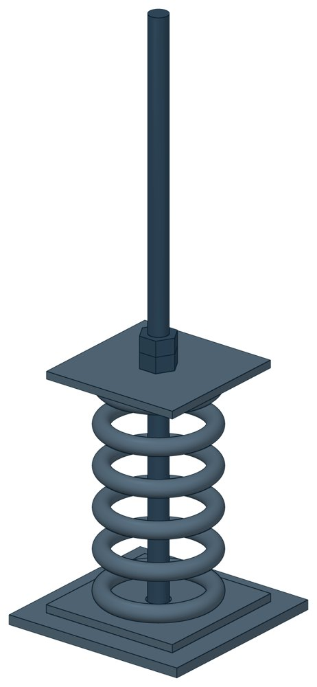

Опорные пружинные блоки ОСТ 108.275.60-80
ОСТ 108.275.60-80. Допускаемая сила — до 78,47 кН, масса 5,6–106 кг.

- Документ
- ОСТ 108.275.60-80
- Исполнений
- 24
- Масса
- 5,6–106 кг
- 3D-модели
- у всех исполнений (условные: общий вид по габаритам)
Таблица исполнений ОСТ 108.275.60-80
| Обозначение | Код ПРОМБУРГ | Допускаемая силакН (кгс) | Диаметр шпилькимм | Сила пружины при рабочей деформациикН (кгс) | Высотамм | Массакг | 3D |
|---|---|---|---|---|---|---|---|
| 01 ОСТ 108.275.60-80 | ПБ-10860-0000-1 | 4,43 (450,0) | 12 | 1,28 (129,0) | 600 | 5,6 | 3D |
| 02 ОСТ 108.275.60-80 | ПБ-10860-0000-2 | 4,43 (450,0) | 12 | 2,75 (279,0) | 600 | 6,1 | 3D |
| 03 ОСП 08.275.60-80 | ПБ-10860-0000-3 | 14,73 (1500,0) | 16 | 5,26 (535,0) | 500 | 13,5 | 3D |
| 04 ОСТ 108.275.60-80 | ПБ-10860-0000-4 | 14,73(1500,0) | 16 | 8,02 (816,0) | 500 | 14,6 | 3D |
| 05 ОСТ 108.275.60-80 | ПБ-10860-0000-5 | 14,73 (1500,0) | 16 | 11,69(1191,0) | 500 | 15,8 | 3D |
| 06 ОСТ 108.275.60-80 | ПБ-10860-0000-6 | 23,55 (2400,0) | 20 | 16,36 (1667,0) | 600 | 18,8 | 3D |
| 07 ОСТ 108.275.60-80 | ПБ-10860-0000-7 | 23,55 (2400,0) | 20 | 19,68 (2006,0) | 600 | 21,1 | 3D |
| 08 ОСТ 108.275.60-80 | ПБ-10860-0000-8 | 33,36 (3400,0) | 24 | 26,36 (2687,0) | 800 | 37,8 | 3D |
| 09 ОСТ 108.275.60-80 | ПБ-10860-0000-9 | 44,15(4500,0) | 27 | 32,62 (3326,0) | 800 | 47,5 | 3D |
| 10 ОСТ 108.275.60-80 | ПБ-10860-0000-10 | 53,96 (5500,0) | 30 | 40,02 (4081,0) | 800 | 54,2 | 3D |
| 11 ОСТ 108.275.60-80 | ПБ-10860-0000-11 | 78,47 (8000,0) | 36 | 48,62 (4956,0) | 800 | 74,8 | 3D |
| 12 ОСТ 108.275.60-80 | ПБ-10860-0000-12 | 78,47 (8000,0) | 36 | 58,47 (5961,0) | 1000 | 83 | 3D |
| Обозначение | Код ПРОМБУРГ | Допускаемая силакН (кгс) | Сила пружины при рабочей деформациикН (кгс) | Высотамм | Длинамм | Массакг | 3D |
|---|---|---|---|---|---|---|---|
| 13 ОСТ 108.275.60-80 | ПБ-10860-0000-13 | 4.43 (450.0) | 1.28 (129.0) | 600 | 12 | 6,6 | 3D |
| 14 ОСТ 108.275.60-80 | ПБ-10860-0000-14 | 4.43 (450.0) | 2.75 (279.0) | 600 | 12 | 7,5 | 3D |
| 15 ОСТ 108.275.60-80 | ПБ-10860-0000-15 | 14.73 (1500.0) | 5.26 (535.0) | 500 | 16 | 16,5 | 3D |
| 16 ОСТ 108.275.60-80 | ПБ-10860-0000-16 | 14.73(1500.0) | 8.02 (816.0) | 500 | 16 | 18,3 | 3D |
| 17 ОСТ 108.275.60-80 | ПБ-10860-0000-17 | 14.73 (1500.0) | 11.69(1191.0) | 500 | 16 | 20,4 | 3D |
| 18 ОСТ 108.275.60-80 | ПБ-10860-0000-18 | 23.55 (2400.0) | 16.36 (1667.0) | 600 | 20 | 24,3 | 3D |
| 19 ОСТ 108.275.60-80 | ПБ-10860-0000-19 | 23.55 (2400.0) | 19.68 (2006.0) | 600 | 20 | 28,5 | 3D |
| 20 ОСТ 108.275.60-80 | ПБ-10860-0000-20 | 33.36 (3400.0) | 26.36 (2687.0) | 800 | 24 | 46,7 | 3D |
| 21 ОСТ 108.275.60-80 | ПБ-10860-0000-21 | 44.15(4500.0) | 32.62 (3326.0) | 800 | 27 | 63,7 | 3D |
| 22 ОСТ 108.275.60-80 | ПБ-10860-0000-22 | 53.96 (5500.0) | 40.02 (4081.0) | 800 | 30 | 72,7 | 3D |
| 23 ОСТ 108.275.60-80 | ПБ-10860-0000-23 | 78.47 (8000.0) | 48.62 (4956.0) | 800 | 36 | 96,2 | 3D |
| 24 ОСТ 108.275.60-80 | ПБ-10860-0000-24 | 78.47 (8000.0) | 58.47 (5961.0) | 1000 | 36 | 106 | 3D |
Чтобы заказать, сообщите обозначение и код ПРОМБУРГ: +7 (499) 325-51-35, promburg@yandex.ru.
Нормативные документы
- ОСТ 108.275.60-80 Блоки пружинные опорные для подвесок трубопроводов ТЭС и АЭС. Конструкция и размеры — документ, по которому изготавливается изделие
Связанные позиции
- Соседний тип: ОСТ 108.275.59-80 — Сдвоенные пружинные блоки
Другие типы раздела
Опоры и блоки подвесок по ОСТ 108.275.26…60-80
- Двуххомутовые неподвижные опоры ОСТ 108.275.26-80
- Опоры однохомутовые ОСТ 108.275.29-80
- Опоры двуххомутовые скользящего типа ОСТ 108.275.30-80
- Катковые блоки с хомутовыми опорами ОСТ 108.275.45-80
- Блоки хомутовые ОСТ 108.275.52-80
- Хомутовые блоки ОСТ 108.275.53-80
- Хомутовые блоки с опорной балкой для подвески ОСТ 108.275.54-80
- Хомутовые блоки с опорной балкой ОСТ 108.275.55-80
- Хомутовые блоки для подвесок ОСТ 108.275.56-80
- Хомутовые блоки для подвесок трубопроводов ОСТ 108.275.57-80
- Пружинные блоки ОСТ 108.275.58-80
- Сдвоенные пружинные блоки ОСТ 108.275.59-80
Частые вопросы
По какому диаметру подбирать — Dн или Ду?
По наружному диаметру трубы Dн: именно он стоит в таблицах серии. Ду — условный проход, округлённая величина: Ду 100 соответствует Dн 108. В заявке указывайте Dн и толщину стенки трубы.
В старом проекте нагрузка в тс, а здесь в кН. Как сравнить?
Серия 4.903-10 даёт нагрузки в тонна-силах, серия 5.903-13 — в килоньютонах. 1 тс = 9,81 кН, то есть 10 тс — это около 98 кН. В таблицах каталога переключатель единиц пересчитывает значения.
Из какой стали изготавливаются опоры?
По рабочим чертежам серии листовые детали — Ст3сп5 ГОСТ 14637-89, хомуты из круга — сталь 20 ГОСТ 1050-88. Для районов с низкой расчётной температурой воздуха применяется низколегированная сталь, в том числе 09Г2С; размеры опор при этом не меняются. В заявке укажите расчётную температуру наружного воздуха.
Почему часть поверхностей опоры не окрашена?
Поверхности под приварку к трубе и к несущей конструкции оставляют без краски, иначе шов получится некачественным. Их консервируют смазкой, которую снимают перед сваркой.
Что указать в заявке, чтобы получить цену без уточнений?
Обозначение с номером исполнения или код ПБ, количество, Dн и стенку трубы, расчётную температуру наружного воздуха, покрытие, город доставки и желаемый срок. Кнопка «В заявку» в таблице собирает спецификацию, которую можно выгрузить в Excel или отправить письмом.